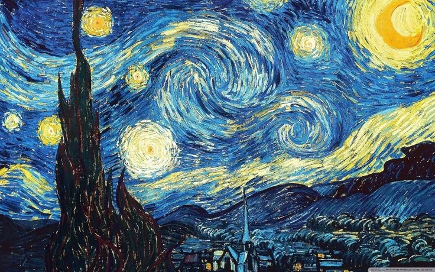
A Noite Estrelada - Vincent van Gogh
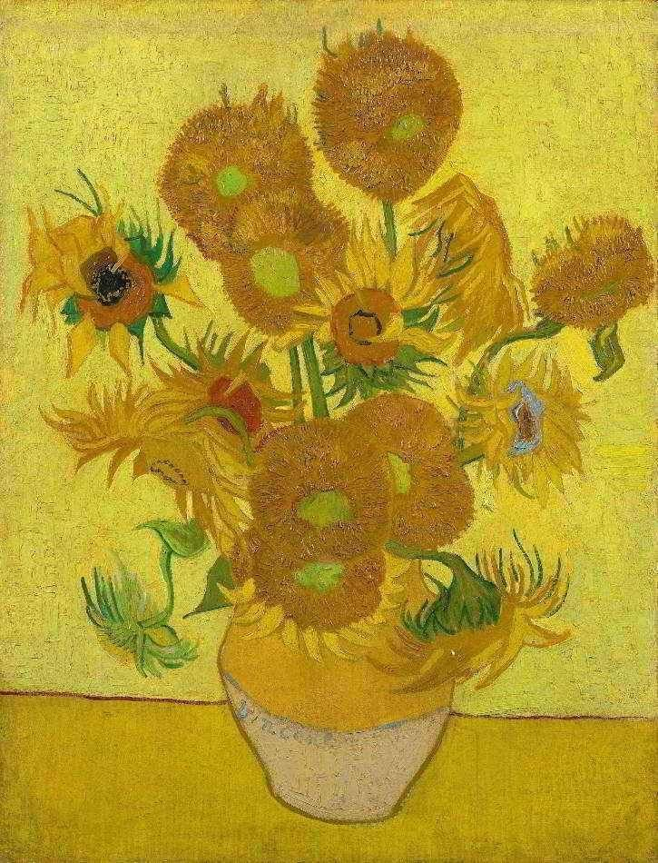
Girassóis - Vincent van Gogh
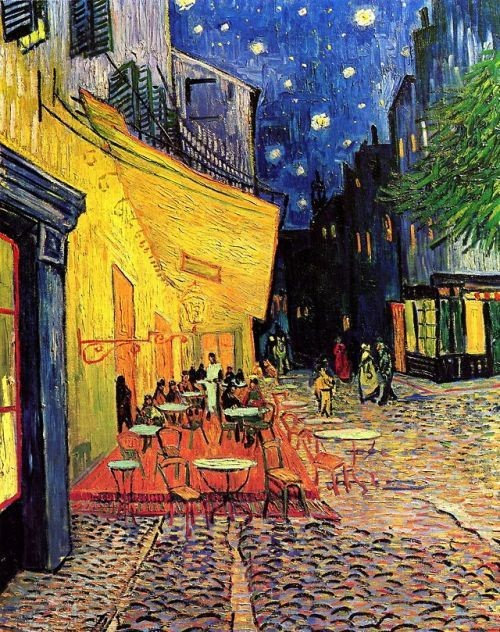
Terraço do Café à Noite - Vincent van Gogh
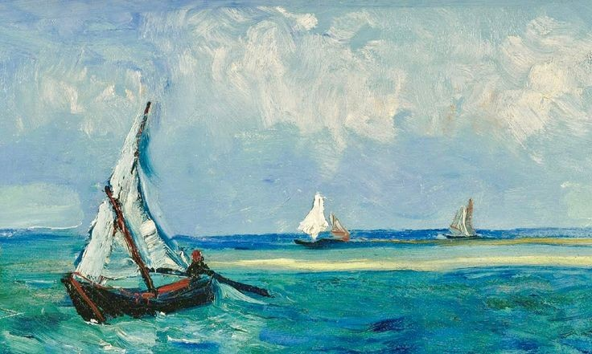
Barcos de Pesca no Mar - Vincent van Gogh
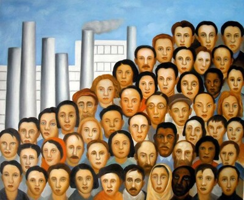
Operários - Tarsila do Amaral
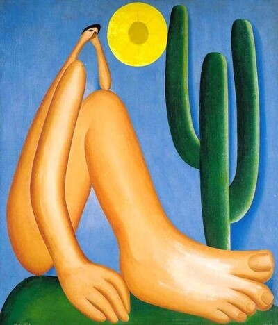
Abaporu - Tarsila do Amaral
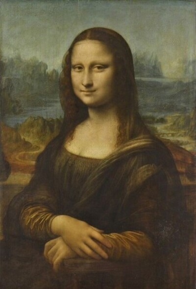
Monalisa - Leonardo da Vinci
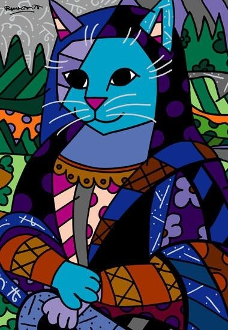
Mona Cat - Romero Britto
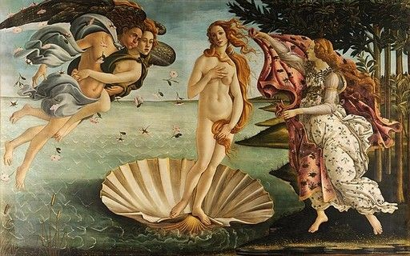
O Nascimento de Vênus - Sandro Botticelli
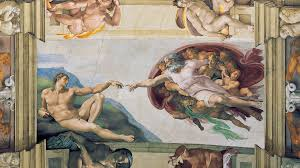
A Criação de Adão - Michelangelo
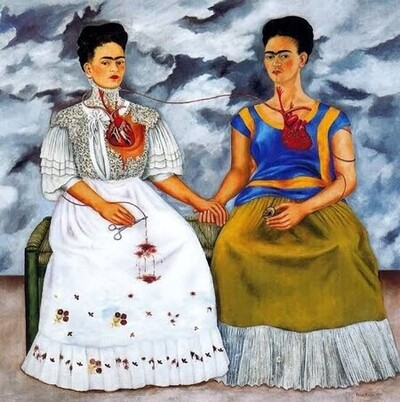
As Duas Fridas - Frida Kahlo